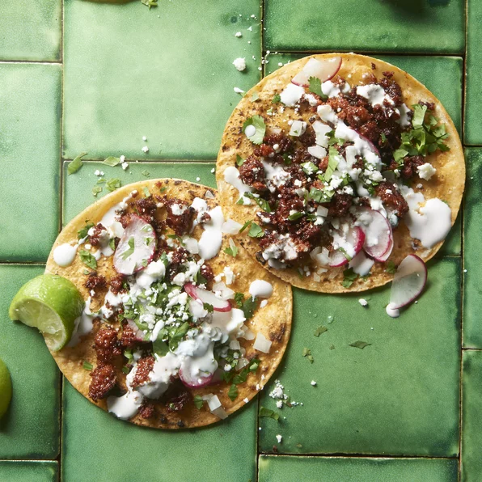

Tacos

Description
Ingrediants
- 1 chorizo sausage link, casing removed and meat crumbled
- 2 tablespoons chipotle peppers in adobo sauce
- 4 corn tortillas
- 2 tablespoons chopped onion, or to taste
- 2 tablespoons chopped fresh cilantro, or to taste (Optional)
Steps
- Mix chorizo and chipotle peppers in adobo sauce together in a bowl.
- Heat a skillet over medium-high heat; add chorizo mixture and cook until crisp, 5 to 7 minutes.
Transfer chorizo to a plate, reserving grease in the skillet.
- Heat tortillas in the reserved grease in skillet over medium heat until warmed, 1 to 2 minutes per side.
Stack 2 tortillas on top of each other for each taco. Fill with chorizo, onion, and cilantro.